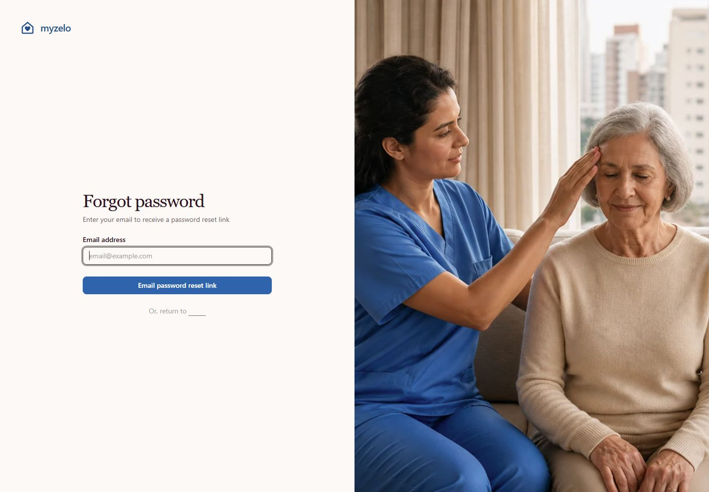
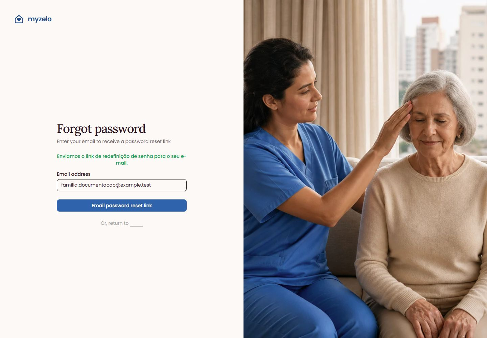
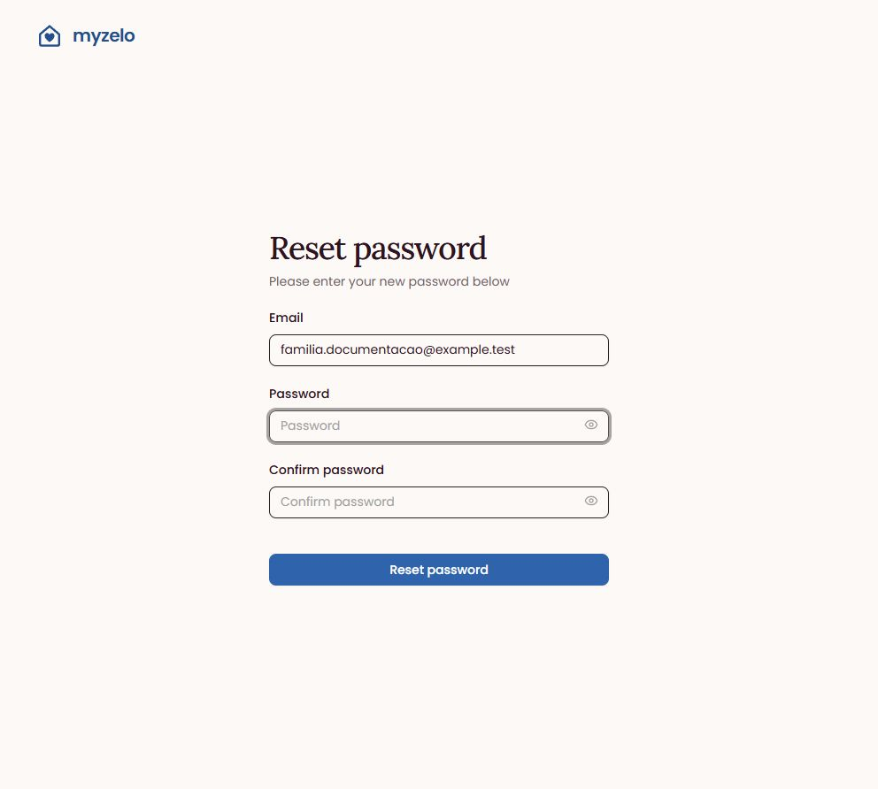

Configurações
Recuperar acesso — esqueci a senha
Solicite um link por e-mail quando não conseguir lembrar sua senha.
Solicitar a mensagem de recuperação
- Na tela Entrar, clique em Esqueceu a senha?.
- A página atual se chama Forgot password. Preencha Email address com o e-mail da conta.
- Clique em Email password reset link (“Enviar link de recuperação de senha”).
- Confira a mensagem de envio e abra a caixa de entrada do e-mail informado.




Usar o link recebido
- Abra a mensagem de redefinição de senha da myzelo. Verifique também a pasta de spam.
- Use o botão de redefinição na mensagem. Ele abre a tela Reset password.
- Confira Email, preencha Password e repita em Confirm password.
- Clique em Reset password. Após concluir, entre com a senha redefinida.


Resultado esperado
Você recebe uma mensagem de recuperação e pode definir uma nova senha.
Regras que você precisa conhecer
- Use o e-mail da conta; o e-mail fiscal não substitui automaticamente o e-mail de acesso.
- O formulário e parte das mensagens ainda estão em inglês.
- Se não houver acesso à caixa de e-mail, este fluxo sozinho não recupera a conta. Procure a equipe responsável pelo ambiente.